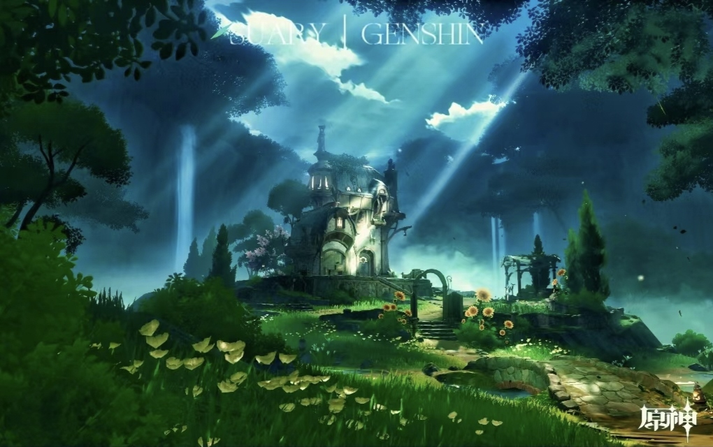
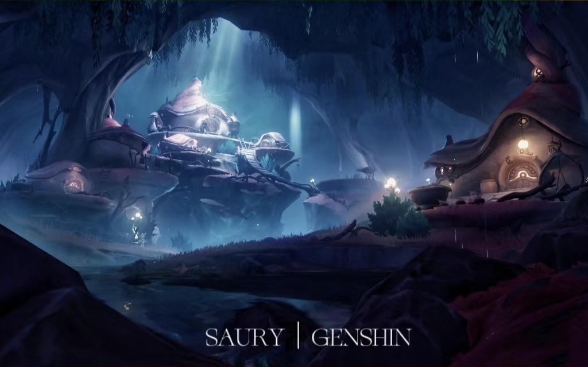

|  |
|  |
以上三图是《原神》中水之国度——枫丹的景色。 枫丹，是游戏《原神》及其衍生作品中的国家，大陆水系的源流之地，提瓦特大陆七国中的一国，被称为“正义的国度”，位于提瓦特大陆的中部。信奉的神明为掌管“正义”的水之神芙宁娜。 背景介绍：枫丹是提瓦特大陆中的一个国家，取名源自于法国的枫丹白露（Fontainebleau）市镇，由水之神芙卡洛斯统治。枫丹人对艺术、时尚、正义有着极致追求，拥有提瓦特七国中最发达的轻工业技术，提瓦特大陆知名报刊《蒸汽鸟报》总部也坐落于枫丹境内。枫丹是位于提瓦特中部的地上之海。循着水淳淳流来的方向而行，越过原野、深林与沙海，抵达的将是大陆水系的源流之地。在瀑布顶端、高原之上的海都深处，从未听闻的故事、早已遗忘的传说如同沉入水底的失落国度般渴求着游人。枫丹地区拥有广阔的水域，潜入水中，不仅能体验到被多样的生物环绕，似乎还有许多宝物和不为人知的故事。 |